SAE Aero Design West 2025 Micro Class
11th Overall · 5th Mission Score · Team Captain
Project Overview
Snapshot
- Event: SAE Aero Design West 2025, Micro Class.
- Team: Team Arrow, Institute of Technology Nirma University.
- Result: 11th overall, 5th mission score.
- Key metrics: payload 2 L; empty weight ~1.6 kg; takeoff roll within competition limits; thrust-to-weight target 0.65.
My Role Team Captain
- Led concept selection, weight budget, and structural layout of fuselage and wing.
- Directed CFD validation, FEA checks, and wind tunnel Cp verification.
- Managed manufacturing pipeline, test plan execution, and flight readiness reviews.
Why This Project Matters
- Demonstrates systems-level design under strict operational constraints.
- Shows ability to validate designs with both simulation and hardware testing.
Quick Specifications
| Wingspan | 1.312 m |
|---|---|
| Wing area | 0.29 m² |
| Empty weight | ~1.6 kg |
| Payload | 2 L (67 oz) |
| Design lift | 49.36 N (CFD) |
| Design thrust | ~26 N required (selected motor within 450 W limit) |
Technical Details
SAE Aero Design West 2025 Technical Details (Team Arrow 325)
Wing
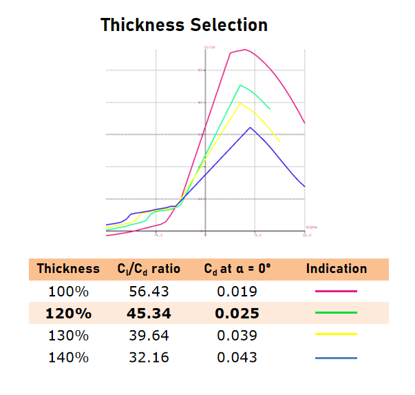
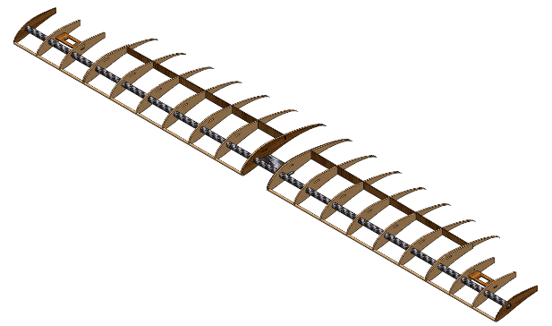
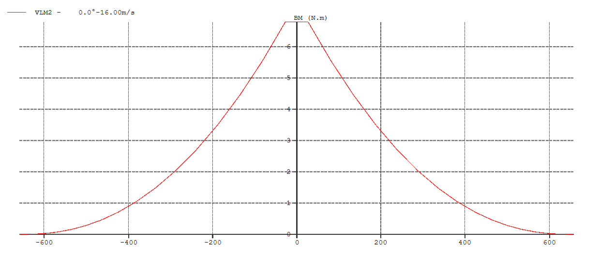
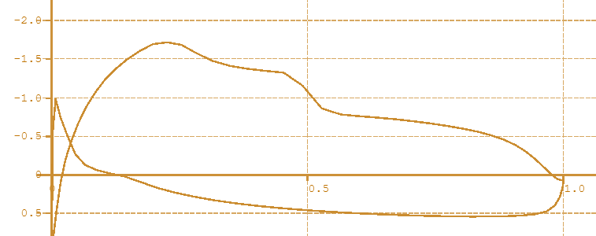
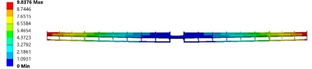

- Airfoil: S1223 (thickened to 120%) to boost low-Re lift performance. (Report: airfoil data and thickness study).
- Geometry: span 1312 mm, wing area 0.29 m², MAC ≈ 220.6 mm, AR ≈ 5.96, taper ≈ 0.83.
- Topology-optimised ribs → ~15% mass reduction per rib; spar + shear web deliver required bending stiffness.
- FEA (gust + cruise): applied 60 N gust load → max deflection ≈ 9.84 mm and acceptable factors of safety.
Fuselage
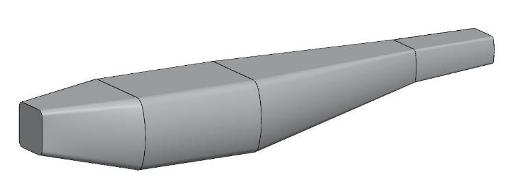

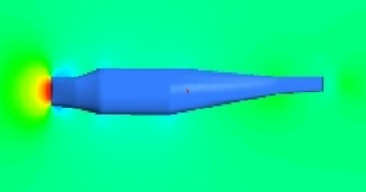

- Dimensions: length ≈ 860 mm, max diameter ≈ 174.6 mm, fineness ratio ≈ 4.9.
- Semi-monocoque aeroply + balsa skin; high-stress areas reinforced with CFRP/aluminium.
Empennage
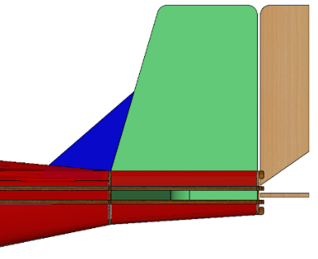
- Conventional arrangement chosen for reliability; XPS foam used for tail panels to resist moisture and loading.
- Dorsal fin area ≈ 10% of vertical stabilizer area for improved sideslip recovery.
- Horizontal tail area SHT ≈ 0.08 m²; vertical tail SVT ≈ 0.03 m² (empirical sizing & moment arms used).
Landing Gear
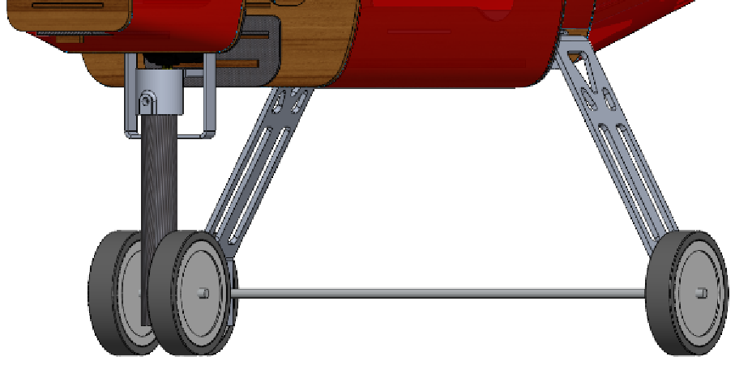
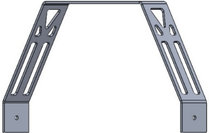
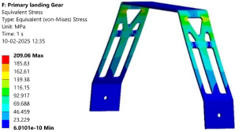
- Main gear carries ≈85% weight; design loadcases include 3× vertical weight (AIAA guidance) and horizontal touchdown loads.
- Al6061-T6, bend geometry and CNC clamp design to secure nose steering servo.
Propulsion
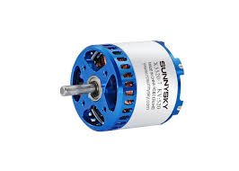
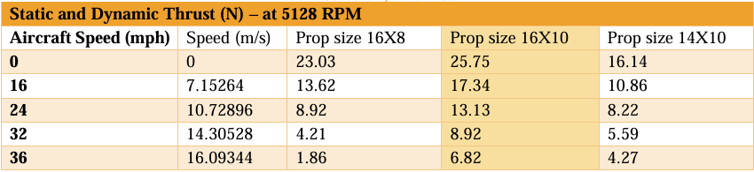
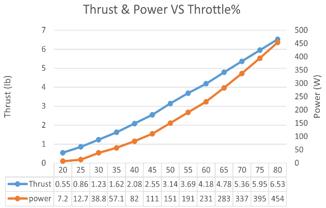
- Selected prop: 16×10; measured static thrust matches predicted values at test RPMs.
- Battery: 1800 mAh 4S (35C) → ≈2.1 minutes endurance for competition profile; ESC: 50 A capable.
Stability & Control
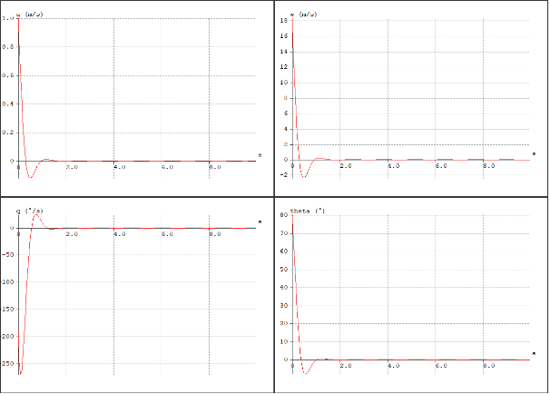
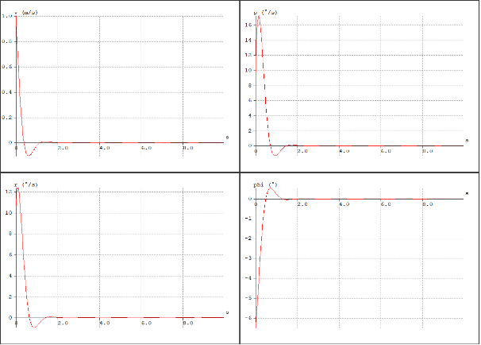
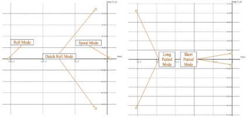
- Static margin = 12.9% (within recommended 10–30%).
- Control surface sizing (ailerons, elevator, rudder) validated with XFLR5 & bench roll tests.
- Tank slosh & CG shift analysis confirm stability across -10° → +15° AoA window. :contentReference[oaicite:10]{index=10}
Testing & Validation
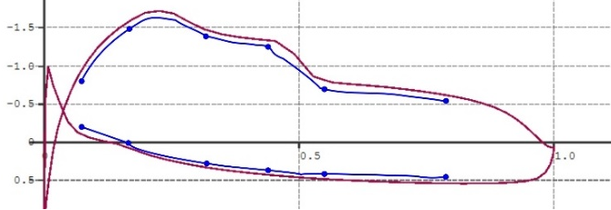
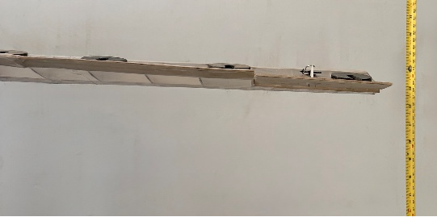
- Takeoff distance (calculated) ≈ 14.18 m well within competition requirements; landing ≈ 16.34 m.
- Full-body CFD (wing + fuselage + propwash) and mesh independence checks performed; residuals ≤ 1e-4 reported.
Final Drawing

Final 3-view drawing mass moments, CG envelope and build reference (used for assembly & TI checks).